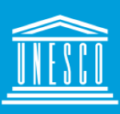
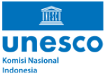
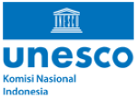

 

UNESCO (United Nations Educational, Scientific, and Cultural Organization) adalah organisasi internasional yang didirikan pada 16 November 1945 untuk mempromosikan perdamaian melalui kerja sama di bidang pendidikan, ilmu pengetahuan, dan budaya. UNESCO bertujuan membangun fondasi perdamaian melalui penguatan pendidikan dan dialog budaya di tengah kerentanan akibat konflik global. Program-program UNESCO mencakup pendidikan, pengembangan sains, pelestarian warisan budaya, serta promosi kebebasan informasi dan komunikasi. Di Indonesia, UNESCO bekerja melalui Komisi Nasional Indonesia untuk UNESCO (KNIU), yang berfungsi untuk mengkoordinasikan kerja sama nasional dan internasional di bidang pendidikan, ilmu pengetahuan, kebudayaan, dan komunikasi. KNIU juga terlibat dalam menetapkan program UNESCO sesuai dengan kepentingan nasional. Salah satu fokus utama UNESCO di Indonesia adalah pelestarian warisan budaya, pendidikan berkualitas, dan inisiatif sains untuk pembangunan berkelanjutan. UNESCO juga mendukung Indonesia melalui kerja sama dengan berbagai pemangku kepentingan untuk meningkatkan akses pendidikan dan melestarikan budaya.
Dalam konteks Tujuan Pembangunan Berkelanjutan (SDGs), UNESCO berperan penting dalam pencapaian SDG ke-4, yang bertujuan untuk memastikan pendidikan yang inklusif, adil, dan berkualitas, serta meningkatkan kesempatan belajar sepanjang hayat untuk semua. Program-program UNESCO mendukung upaya global untuk meningkatkan kualitas pendidikan dengan menyediakan pelatihan guru, mengembangkan kurikulum pendidikan yang relevan, dan memperkuat akses terhadap pendidikan berkualitas bagi anak-anak di seluruh dunia. Di Indonesia, UNESCO melalui KNIU berfokus pada peningkatan kualitas pendidikan dengan melibatkan berbagai pihak, termasuk pemerintah dan lembaga pendidikan, dalam mendukung kebijakan yang memastikan pendidikan yang lebih merata dan dapat diakses oleh semua kalangan, terutama di daerah terpencil.